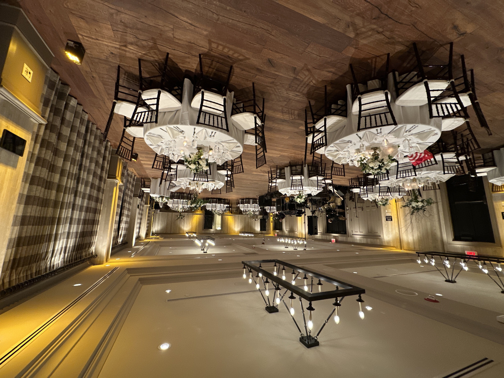
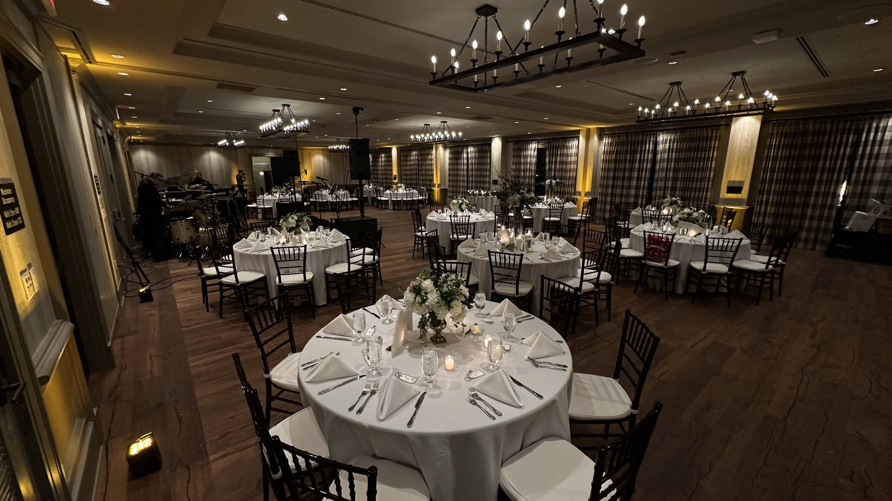

Manchester’s marquee boutique hotel. Cozy and celebratory simultaneously. The brief asked for both.
The Kimpton Taconic ballroom is Manchester’s marquee boutique hotel venue — elegant, intimate, and deserving of production that matches its character. A fall wedding in that space calls for warmth without heaviness, an atmosphere that feels both formal and alive. The couple wanted the room to feel celebratory from the moment guests arrived.
We provided perimeter uplighting for the full ballroom, running from the ceremony through the cocktail hour and into the reception. Warm amber tones dressed the room’s architectural surfaces and shifted in register as the evening progressed. The band handled their own sound and backline. The ceremony sound was managed separately. Our focus was on the visual atmosphere — making the room feel right for every moment without calling attention to how it was done.
The lighting shifted between three distinct modes across the evening. Our engineer stayed through the full run of show and managed every cue. The room looked exactly like the couple envisioned it.
The hotel trusts us with events that require precision. That trust was built in this room, at this wedding.

